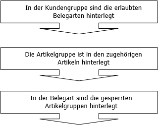
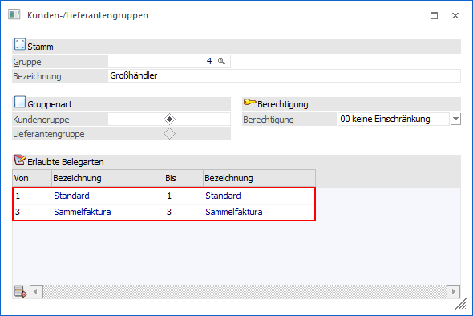
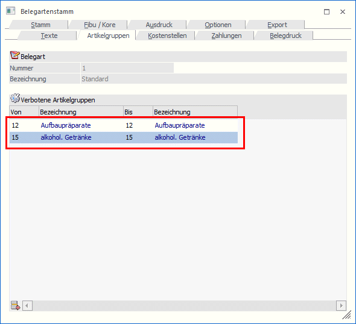
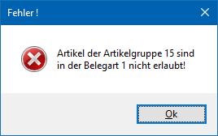

In bestimmten Branchen ist es üblich, dass manche Artikel nur an ausgewählte Kunden verkauft werden dürfen (z.B. Suchtgift im Pharmabereich). Ein anderer Teil des Sortiments ist für alle Kunden zugänglich.
Des Weiteren kann gefordert werden, dass bestimmte Artikel nicht gemeinsam mit anderen Artikel auf einem Beleg stehen dürfen.
Dieser Mechanismus wird über die Belegart und über die Artikelgruppe gesteuert. Die folgende Grafik verdeutlicht den Zusammenhang:

Durch diese Verkettung kann bewirkt werden, dass Artikel für bestimmte Kunden nicht verfügbar sind:
ü Es sind zunächst alle Artikel, die teilweise gesperrt sind, zu einer oder mehreren Artikelgruppen zusammenzufassen.
ü Diese Artikelgruppen sind bei einer Belegart zu hinterlegen.
ü Diese Belegart wird jenen Kunden nicht zugewiesen, welche die Artikel nicht beziehen dürfen.
ü Dadurch werden Belegarten, die gesperrte Artikelgruppen beinhalten, beim Belegerfassen für diese Kunden nicht vorgeschlagen.
Verkettung von Belegarten mit Kundengruppen
Im Programmpunkt
1 WinLine FAKT
1 Stammdaten
1 Gruppenanlage
1 Kunden/Lieferanten
werden für die Kundengruppen die erlaubten Belegarten eingetragen.

In der Tabelle "Erlaubte Belegarten" werden die Bereiche der Belegarten eingegeben, die für diese Kundengruppe zulässig sind. Es können auch mehrere Bereiche angegeben werden.
Verkettung von Artikelgruppen mit Belegarten
Im Programmpunkt
1 WinLine FAKT
1 Stammdaten
1 Belegstammdaten
1 Belegarten
können die Artikelgruppen, die nicht erlaubt sind, einer Belegart zugewiesen werden.

Nach Anwahl des Abschnittes Artikelgruppen, können die zu sperrenden Artikelgruppenbereiche eingegeben werden.
Auswirkungen auf die Belegbearbeitung
In der Belegbearbeitung wird die Belegart vorgeschlagen, die im Kundenstamm eingetragen wird. Soll die Belegart im Belegkopf übersteuert werden, werden nur die in der Kundengruppe erlaubten Belegarten vorgeschlagen. Die direkte Eingabe einer verbotenen Belegart ist in der Auswahlbox nicht möglich.
Im Erfassen der Artikelzeilen, wird überprüft, ob der Artikel einer Artikelgruppe angehört, die in der Belegart als verboten eingetragen ist. Ist dies der Fall wird der Artikel abgewiesen.

Beispiel
Kunde "230A001" darf nicht mit Suchtgiftartikel beliefert werden.
ü Es wird zunächst eine Artikelgruppe "Suchtgift" definiert, welche die Suchtgifte enthält.
ü Diese Artikelgruppe wird einer eigenen Belegart "50 - Gesperrte Artikel" zugewiesen.
ü Es wird eine Kundengruppe "10 - Eingeschränkte Belieferung" definiert.
ü Die Kundengruppe "10" wird beim Kunden "230A001" eingetragen.
Beispiel
Kunde "230A001" darf mit allen Artikeln beliefert werden, aber für Suchtgiftartikel muss ein eigener Beleg geschrieben werden, auf dem keine "freien" Artikel angeführt werden dürfen.
ü Es wird eine Belegart mit Sperre der Artikelgruppen, welche die Suchtgiftartikel umfassen, angelegt.
ü Es wird eine weitere Belegart definiert, die alle anderen Artikelgruppen (alle Nichtsuchtgiftartikel) sperrt.
ü In der Kundengruppe sind beide Belegarten eingetragen, d.h. für den Kunden prinzipiell möglich. Da ein Beleg aber immer fix einer Belegart zugeordnet ist, kann entweder nur die eine oder die andere Belegart und damit Artikelgruppe fakturiert werden.
ü Damit ist das gemeinsame Fakturieren von Suchtgiftartikel und Nichtsuchtgiftartikel ausgeschlossen.
Ø Müssen für Kundengruppen immer erlaubte Belegarten definiert werden?
Nein, diese Funktion ist eine Option, die nicht genutzt werden muss. Können alle Kunden alle Artikel beziehen, werden die beschriebenen Eingaben nicht vorgenommen.